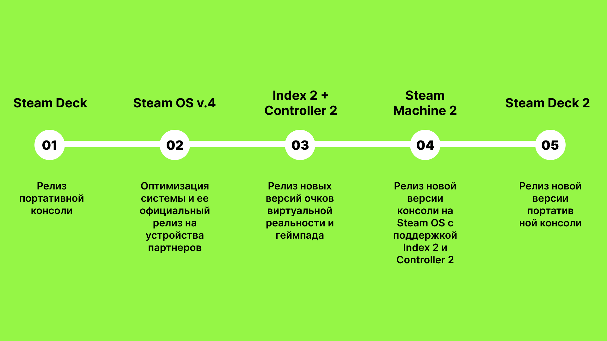
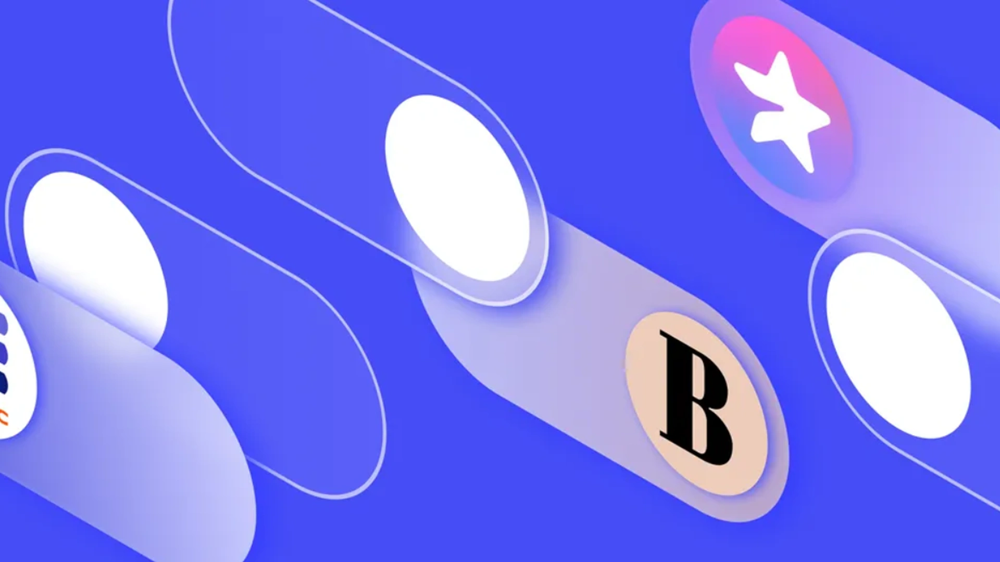

Посты

16 июня 2025
Будущие планы Valve
В хронологическом порядке:
1. Выпуск портативной консоли Steam Deck;
2. Выпуск четвертой версии Steam OS, которая включает оптимизацию операционной системы и её официальный запуск на устройствах партнеров;
3. Выпуск новых версий очков виртуальной реальности Valve Index 2 и геймпада Steam Controller 2;
4. Выпуск новой версии стационарной консоли Steam Machine 2 на Steam OS с поддержкой Valve Index 2 и Steam Controller 2;
5. Выпуск новой версии портативной консоли Steam Deck 2;
Информация является предположением автора поста и не подтверждена как достоверная.

31 марта 2025
Рассрочка на подписки
Беспроцентная рассрочка на подписки интернет-сервисов от коммерческих банков может стать доступной уже в ближайшее время.
Крупные компании всё чаще используют модель подписки с ежемесячной или годовой оплатой в качестве основы для предоставления своих услуг.
Практика показывает, что годовая оплата подписки существенно дешевле по сравнению с ежемесячными платежами.
Для примера годовая подписка на Яндекс Плюс составляет 3400 рублей, что в 1.4 раза дешевле по сравнению ежемесячной оплатой в 399 рублей (399 руб. x 12 мес. = 4788 руб)..
Коммерческие банки могут разделить сумму годовой подписки на равные ежемесячные платежи для снижения финансовой нагрузки на обычного потребителя, взимая взамен небольшую комиссию до 15% за предоставленные услуги